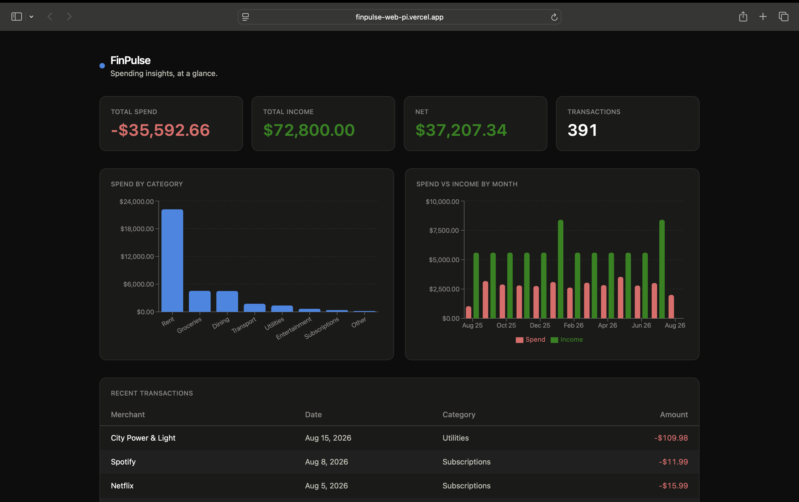
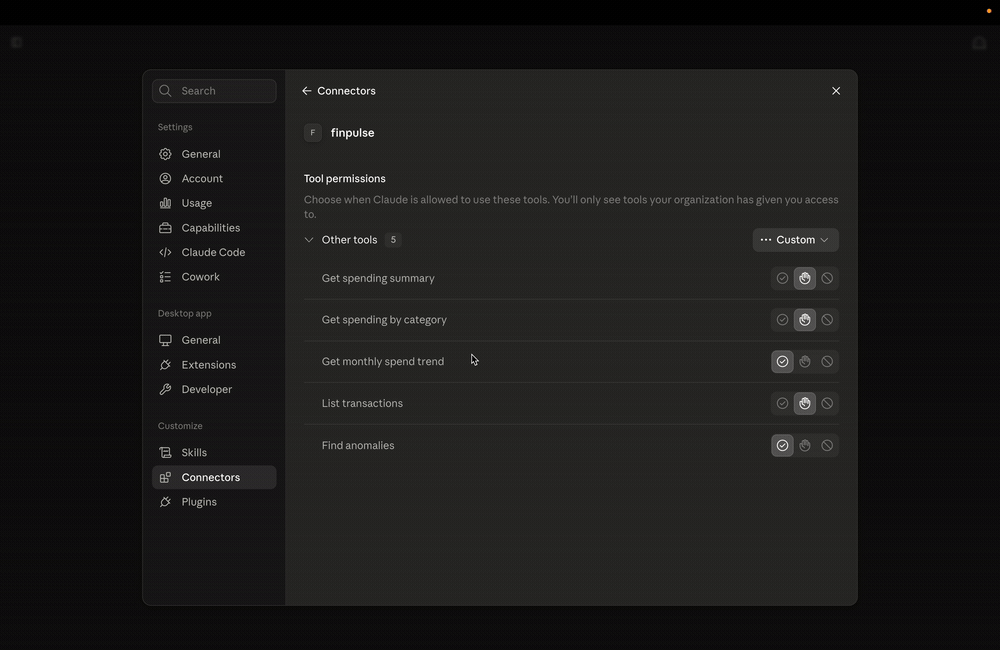

Flagship · Agentic AI
FinPulse
An AI-powered personal finance platform that an AI agent can operate directly.
Imports transactions into Postgres, auto-categorizes them, and detects anomalous spending with a statistical detector plus an ARIMA time-series model. Forecasts spend and generates grounded natural-language insights through the Claude API.
Its headline feature is a custom MCP server that exposes the app’s data as read-only tools — so an agent like Claude Desktop can autonomously query spending and surface anomalies over real data. This demonstrates agentic-AI engineering, not just AI usage.

- Read-only MCP tools as a deliberate safety boundary
- Shared query layer powering both the web app and the MCP server
- Deterministic synthetic data with labeled anomalies for evaluation